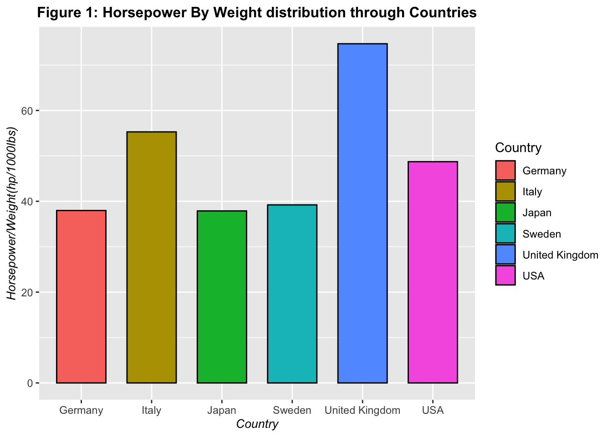

The objective of this assignment is to practice cleaning and transforming a messy dataset using tidyverse functions. You will use skills like renaming and reordering columns, sorting rows, changing data types, mutating data, and using the stringr and forcats packages.
In this Level 1 Cleaning assignment, you will work with a simple dataset and focus on basic data cleaning tasks. Most tasks are outlined in the assignment script. You may want to review the Data Cleaning Walkthrough before you begin.
You may additionally or alternatively complete the Level 2 Data Cleaning assignment. In Level 2, you will work with a more complex dataset and perform additional cleaning tasks with less direct instruction. The Level 2 assignment has more opportunities to demonstrating meeting course standards than this Level 1 assignment and is recommended for those who are already comfortable with the tasks in this assignment.
Instructions
If you have not already done so, pull the latest changes from the d2mr-assessment repository to ensure you have the most up-to-date version of the assignment files. Confirm you are working in your fork of the repository.
Open cleaning-level-1.qmd in RStudio and follow the instructions in the Setup section below to load and inspect the (clean) goal.mtcars dataset.
Important: The provided code makes a small modification to the original mtcars dataset to create a goal.mtcars dataset. You will use this goal dataset as a reference to clean the messy-mtcars.csv dataset, not the true original.
Follow the tasks described in the assignment script to clean the dataset and return it to its original state.
At several points in this document you will come across questions or non-coding exercises. Answer these questions in the text of this .qmd document, immediately below the question.
Optional: Continue to follow the instructions in the assignment script to clean the dataset above and beyond matching the original.
Tasks
Reminder: Your goal is to match goal.mtcars (created below), not the default mtcars.1
Renaming Columns: Rename columns to match the original mtcars dataset column names.
Reordering Columns: Ensure the columns are in the correct order.
Sorting Rows: Sort the rows by mpg (miles per gallon) and then by cyl (number of cylinders).
Changing Data Types: Ensure gear and carb are factors and other columns are numeric.
Mutating Data: Create a new column hp_per_cyl calculated as hp (horsepower) divided by cyl.
String Manipulation: Use stringr to clean any unwanted spaces or characters in the model column.
Handling Factors: Use forcats to ensure the levels of gear are ordered as 3, 4, 5.
Setup
Loading libraries and set seed
library(tidyverse)
── Attaching core tidyverse packages ──────────────────────── tidyverse 2.0.0 ──
✔ dplyr 1.1.4 ✔ readr 2.1.5
✔ forcats 1.0.0 ✔ stringr 1.5.1
✔ ggplot2 3.5.1 ✔ tibble 3.2.1
✔ lubridate 1.9.4 ✔ tidyr 1.3.1
✔ purrr 1.0.2
── Conflicts ────────────────────────────────────────── tidyverse_conflicts() ──
✖ dplyr::filter() masks stats::filter()
✖ dplyr::lag() masks stats::lag()
ℹ Use the conflicted package (<http://conflicted.r-lib.org/>) to force all conflicts to become errors
set.seed(1234)
Read in and inspect messy data
Read in and inspect the messy dataset messy-mtcars.csv.
#| label: read-messy-data### LEAVE THIS CHUNK AS-IS #### You *might* need to edit the filepath, but don't change anything else!# Read in messy-mtcars.csvmessy.mtcars <-read_csv(########################################"messy-mtcars.csv", ## <-- THIS IS THE ONLY THING IN THIS CHUNK YOU CAN CHANGE IF NECESSARY########################################trim_ws =FALSE, name_repair ="minimal", col_types =cols(.default =col_character()))# Inspect the datahead(messy.mtcars)
### LEAVE THIS CHUNK AS-IS #### Load the original mtcars datasetdata(mtcars)# Create the "goal.mtcars" dataset# Convert row names to a column called "model" (see note above about row names)goal.mtcars <- mtcars %>%rownames_to_column(var ="model")# Inspect the goal.mtcars dataset#head(goal.mtcars)# Optionally inspect the original mtcars dataset to see what the row names vs column issue looks likehead(mtcars)
[1] "Names: 6 string mismatches"
[2] "Attributes: < Names: 1 string mismatch >"
[3] "Attributes: < Length mismatch: comparison on first 2 components >"
[4] "Attributes: < Component \"class\": 1 string mismatch >"
[5] "Attributes: < Component 2: Modes: character, externalptr >"
[6] "Attributes: < Component 2: target is character, current is externalptr >"
[7] "Length mismatch: comparison on first 11 components"
[8] "Component 1: Modes: numeric, character"
[9] "Component 1: target is numeric, current is character"
[10] "Component 2: Modes: numeric, character"
[11] "Component 2: target is numeric, current is character"
[12] "Component 3: Modes: numeric, character"
[13] "Component 3: target is numeric, current is character"
[14] "Component 4: Modes: numeric, character"
[15] "Component 4: target is numeric, current is character"
[16] "Component \"drat\": Modes: numeric, character"
[17] "Component \"drat\": target is numeric, current is character"
[18] "Component \"wt\": Modes: numeric, character"
[19] "Component \"wt\": target is numeric, current is character"
[20] "Component \"qsec\": Modes: numeric, character"
[21] "Component \"qsec\": target is numeric, current is character"
[22] "Component \"vs\": Modes: numeric, character"
[23] "Component \"vs\": target is numeric, current is character"
[24] "Component \"am\": Modes: numeric, character"
[25] "Component \"am\": target is numeric, current is character"
[26] "Component 10: Modes: numeric, character"
[27] "Component 10: target is numeric, current is character"
[28] "Component 11: Modes: numeric, character"
[29] "Component 11: target is numeric, current is character"
#colnames(mtcars)#colnames(messy.mtcars)
QUESTIONS:
What are the differences between the messy dataset and the original mtcars dataset?
Begin answer for Question 1 by Aziz
number of columns is different (original has 11 columns, messy has 14 columns) the extra 3 columns handle some kind of mathematical manipulation of the original columns
data types are different. Original dataset has dbl “basically float” types, while the messy dataset contains “chr” or character data types.
4.The dsip in the messy dataset is not rounded to the nearest whole number, but it is rounded in the original dataset.
Answer for Question 1 ended
What are the main issues you need to address in cleaning?
Begin answer for Question 2 by Aziz
before doing anything , I will create a “clean” version that gradually becomes the goal dataset, I will use all.equal() function to compare the the clean dataset and the goal dataset. by the end I should have zero differences.
We have to drop the extra columns that contain the mathematical manipulations such as : “wt + runif(n(), 2e-05, 2e-04)” and “hp_per_cyl”
And we need to have car models as an index not a separate column 2. We will have to change the datatypes from (chr) to (dbl)
We will change the rounding in the dsip column to be rounded to the nearest whole number.
Finally , we have to rename the columns in messy.mtcars from long to abbreviated versions (e.g Miles per Gallon to mpg)
Answer for Question 2 ended
Clean the Dataset
Create “clean” dataset
#| label: make-cleaning-dataset# Create a dataset to work with during the cleaning process called "clean.mtcars"clean.mtcars<-messy.mtcarscolnames(goal.mtcars)
#| label: rename-columns# Rename columns to match the original mtcars datasetclean.mtcars<-messy.mtcars %>%rename(mpg="mpg (Miles/Gallon)",cyl="cylinders",hp="horsepower",drat="drat",wt="wt",qsec="qsec",vs="vs",am="am",gear="gearbox",disp="dsip",carb="carburetors")#since the original mtcars has the models as the index column, we'll convert #the cars model column to an index columnclean.mtcars<-clean.mtcars %>%column_to_rownames(" Car Model")head(clean.mtcars)
#| label: reorder-columns# Reorder columns to match the original mtcars dataset#let's have them side by side first to see the differences (will comment this out)#colnames(mtcars)#colnames(clean.mtcars)#now when we see them side by side , I can determine the order accordinglyclean.mtcars<- clean.mtcars %>%relocate(mpg,cyl,disp,hp,drat,wt,qsec,vs,am,gear,carb)#now let's check them side by side colnames(mtcars)
#| label: correct-data-types# Correct variable data types#let's check the data types side by side. I will use the glimpse function#which was explained in the walkthrough (will be commented out)#glimpse(mtcars)#glimpse(clean.mtcars)#now we can see that they're different, original has doubles (dbl) and clean has# string (chr)#we'll use the mutate functionsclean.mtcars<- clean.mtcars %>%mutate(mpg=as.numeric(mpg) ,cyl=as.numeric(cyl) ,disp=as.numeric(disp) ,hp=as.numeric(hp) ,drat=as.numeric(drat) ,vs=as.numeric(vs) ,am=as.numeric(am) ,gear=as.numeric(gear) ,wt=as.numeric(wt) ,qsec=as.numeric(qsec) ,carb=as.numeric(carb))#let's check now and have them side by side #glimpse(mtcars)#glimpse(clean.mtcars)#now the data types all match , but we still need to round disp to the nearest whole number.#round head(mtcars)
# Use all.equal() to check if clean.mtcars matches goal.mtcarsall.equal(goal.mtcars,clean.mtcars)
[1] "Names: 12 string mismatches"
[2] "Attributes: < Component \"row.names\": Modes: numeric, character >"
[3] "Attributes: < Component \"row.names\": target is numeric, current is character >"
[4] "Length mismatch: comparison on first 12 components"
[5] "Component 1: Modes: character, numeric"
[6] "Component 1: target is character, current is numeric"
[7] "Component 2: 'is.NA' value mismatch: 2 in current 0 in target"
[8] "Component 3: Mean relative difference: 36.28836"
[9] "Component 4: 'is.NA' value mismatch: 3 in current 0 in target"
[10] "Component 5: Mean relative difference: 0.9754829"
[11] "Component 6: Mean relative difference: 0.3255365"
[12] "Component 7: Mean relative difference: 4.547717"
[13] "Component 8: Mean relative difference: 0.9754885"
[14] "Component 9: Mean relative difference: 1.857143"
[15] "Component 10: Mean relative difference: 8.076923"
[16] "Component 11: Mean relative difference: 0.4946237"
[17] "Component 12: Modes: numeric, character"
[18] "Component 12: target is numeric, current is character"
Questions:
The current state of the dataset does not yet match the goal.mtcars dataset. Explain the issues that all.equal() flags. Are there groups of issues that can be addressed together?
#Aziz Answer to Question 3
Based on the progress I made by 1. renaming the columns 2. removing the calculation columns 3. rearranging the columns order 4. changing the type of data in the columns What’s left of me now is to address the 16 differences indicated by the all equal function. 8 of these differences indicate mean relative differences because of rounding (goal.mtcars has rounding, clean.mtcars doesn’t round) 6 differences are results because goal.mtcars has numeric indexing, while clean.mtcars has the car models as indices or “rownames” 2 differences are due to missing NA values in the clean.mtcars
#Answer to Question 3 Ended 3. Install (if necessary) and load the daff package. In the code chunk below, use the diff_data() function to identify the differences between clean.mtcars and goal.mtcars.
# Install and/or load the daff package if needed#install.packages("daff")library(daff)# Use render_diff() and diff_data() to identify differences between clean.mtcars and goal.mtcarsrender_diff(diff_data(clean.mtcars,goal.mtcars))
How is this method of identifying data discrepancies different from all.equal()? Which do you find more helpful at this point?
#Aziz Answer to Question 4
The differences are presented in a more pristine and clean manner than the all.equal(). also m, render_diff(diff_data()) method gives you clear instructions on how to carry out the differences between the two sets, or how the changes occur exactly.
#Answer to Question 4 Ended
Clean data values
Identifying specific value problems and cleaning them might take a little creativity at times! Use the troubleshooting/debugging workflows we’ve discussed to get as far as you can.
#| label: remove-unwanted-spaces# Remove unwanted whitespace in any columns requiredhead(clean.mtcars)
#the issue is that we converted clean.mtcars to goal.mtcars, which does have a #separate column for car models... Now we have to change the models from rownames#back to being a separate column....#learned this technique because it was used earlier in this miniprojectclean.mtcars<-clean.mtcars%>%rownames_to_column(var="model")head(clean.mtcars)
#done , now we can remove unwanted whitespace in the model column#this was done in the walkthrough , so will do it now with the model column #because it is only the column with strings (characters)clean.mtcars<-clean.mtcars%>%mutate(model=str_squish(model))clean.mtcars
#| label: impute-missing-values# Impute missing values for cyl and hp#Here I will replace the missing "NA" values from the goal.mtcars to impute them in #the hp columnclean.mtcars$hp[is.na(clean.mtcars$hp)] <- goal.mtcars$hp[is.na(clean.mtcars$hp)] #Now I will do the same for cylclean.mtcars$cyl[is.na(clean.mtcars$cyl)]<- goal.mtcars$cyl[is.na(clean.mtcars$cyl)]#now clean.mtcars has no NA valuesclean.mtcars
#| label: round-numeric-values# Round numeric values#I will use the mutate fuction then the round function as per the walkthroughclean.mtcars <- clean.mtcars %>%mutate(disp=round(disp,1),drat=round(drat,2),qsec=round(qsec,2), )clean.mtcars
#| label: fix-typos# Fix typos in model names## Hint: This can be completed with a 6-line mutate() statement#first , let's take a look at the differences#so it seems there are two problems: # 1 certain models are replacing o with 0# 2 capitalization is not consistent# will fix that using the mutate functionclean.mtcars<-clean.mtcars %>%mutate (model=str_replace_all(model,"T0yota|ToyotA","Toyota"), #Turns out I can use | as or within the textmodel=str_replace_all(model,"L0tus","Lotus"),model=str_replace_all(model,"PontiAc","Pontiac"),model=str_replace_all(model,"FerrAri","Ferrari"),model=str_replace_all(model,"SportAbout","Sportabout"),model=str_replace_all(model,"CAdillac","Cadillac") )render_diff(diff_data(clean.mtcars,goal.mtcars))
#| label: remove-extra-column# Remove the extra column#finally , we'll remove the extra two annoying calculation columns clean.mtcars<-clean.mtcars %>%select(-"wt + runif(n(), 2e-05, 2e-04)",-"hp_per_cyl")#now let's check the dataset if they're equalall.equal(clean.mtcars,goal.mtcars)
[1] TRUE
# TRUE , fantastic
Checkpoint 2
# Inspect the dataset and compare to goal.mtcarsclean.mtcars
# daffrender_diff(diff_data(clean.mtcars,goal.mtcars))#looks good !
Questions:
Is your dataset identical to goal.mtcars? If not, what are the remaining issues? If there were any issues you could not resolve in code, describe a proposed solution in plain English.
#Aziz Answer to Question 5
According to the all.equal task and render diff task , the data is now identical. The only thing I am not sure that I was supposed to do was to impute the NA values from the goal.mtcars, which may defeat the purpose of actually imputing a missing value by using the mean value of the column or remove the row. Since the instructions were not clear , I improvised and took the data from the goal.mtcars dataset.
#Answer to Question 5 ended
Optional Cleaning Tasks
You can call it a day here, or continue with the optional cleaning tasks below. These tasks are a chance to challenge yourself and practice your skills further. They are also additional opportunities to demonstrate mastery of course standards!
Additional guided cleaning
Optional: Complete any number of the following tasks to further clean the dataset. Each task should be in its own code chunk with an appropriate label and clearly commented code:
Create a new factor column mpg_category that categorizes mpg into “low”, “medium”, and “high” based on the distribution of mpg values.
#since this is more than two conditions , I am better off using mutate to accomodate all conditions.#first , let's know what what the mean , min and max for mpg min(clean.mtcars$mpg)
[1] 10.4
max(clean.mtcars$mpg)
[1] 33.9
mean(clean.mtcars$mpg)
[1] 20.09062
# ok so the average is around 20 , the minimum is 10 and the maximum is around 34#I can do better , let's try the summary function summary(clean.mtcars$mpg)
Min. 1st Qu. Median Mean 3rd Qu. Max.
10.40 15.43 19.20 20.09 22.80 33.90
#the median is also around 19 , the third quartertile however begins at around 21# my categories will then up to 15 is low, 15-23 is medium,above 23 is high#I will use the mutate based on this post on stackflow #https://stackoverflow.com/questions/50001383/adding-a-new-column-based-upon-values-in-another-column-using-dplyrclean.mtcars<-clean.mtcars %>%mutate(mpg_category=case_when(mpg<=15~"low", (mpg>15& mpg<=23~"medium"), (mpg>23)~"high"))clean.mtcars
Create a new factor column wt_category that categorizes wt into “light”, “medium”, and “heavy” based on the distribution of wt values, then reverse the order of the levels.
#will do the same thing , summarize the distribution fo the wt valuessummary(clean.mtcars$wt)
Min. 1st Qu. Median Mean 3rd Qu. Max.
1.513 2.581 3.325 3.217 3.610 5.424
#ok so everything up to 2.58 is light, 2.58-3.61 is medium , and >3.61 is heavyclean.mtcars<-clean.mtcars%>%mutate(wt_category=case_when(wt<=2.58~"Light", wt>2.58& wt<=3.61~"Medium", wt>3.61~"Heavy") )%>%mutate(wt_category =factor(wt_category,levels=c("Heavy","Medium","Light")) ) %>%arrange(wt_category)%>%#arranges the factors mutate(wt_category=fct_rev(wt_category) ) #reversing using fct_rev,which comes from the forcats package#now to ensure the levels are reversed and are presented as such levels(clean.mtcars$wt_category)
[1] "Light" "Medium" "Heavy"
print(clean.mtcars)
model mpg cyl disp hp drat wt qsec vs am gear carb
1 Merc 450SE 16.4 8 275.8 180 3.07 4.070 17.40 0 0 3 3
2 Merc 450SL 17.3 8 275.8 180 3.07 3.730 17.60 0 0 3 3
3 Merc 450SLC 15.2 8 275.8 180 3.07 3.780 18.00 0 0 3 3
4 Cadillac Fleetwood 10.4 8 472.0 205 2.93 5.250 17.98 0 0 3 4
5 Lincoln Continental 10.4 8 460.0 215 3.00 5.424 17.82 0 0 3 4
6 Chrysler Imperial 14.7 8 440.0 230 3.23 5.345 17.42 0 0 3 4
7 Camaro Z28 13.3 8 350.0 245 3.73 3.840 15.41 0 0 3 4
8 Pontiac Firebird 19.2 8 400.0 175 3.08 3.845 17.05 0 0 3 2
9 Mazda RX4 21.0 6 160.0 110 3.90 2.620 16.46 0 1 4 4
10 Mazda RX4 Wag 21.0 6 160.0 110 3.90 2.875 17.02 0 1 4 4
11 Hornet 4 Drive 21.4 6 258.0 110 3.08 3.215 19.44 1 0 3 1
12 Hornet Sportabout 18.7 8 360.0 175 3.15 3.440 17.02 0 0 3 2
13 Valiant 18.1 6 225.0 105 2.76 3.460 20.22 1 0 3 1
14 Duster 360 14.3 8 360.0 245 3.21 3.570 15.84 0 0 3 4
15 Merc 240D 24.4 4 146.7 62 3.69 3.190 20.00 1 0 4 2
16 Merc 230 22.8 4 140.8 95 3.92 3.150 22.90 1 0 4 2
17 Merc 280 19.2 6 167.6 123 3.92 3.440 18.30 1 0 4 4
18 Merc 280C 17.8 6 167.6 123 3.92 3.440 18.90 1 0 4 4
19 Dodge Challenger 15.5 8 318.0 150 2.76 3.520 16.87 0 0 3 2
20 AMC Javelin 15.2 8 304.0 150 3.15 3.435 17.30 0 0 3 2
21 Ford Pantera L 15.8 8 351.0 264 4.22 3.170 14.50 0 1 5 4
22 Ferrari Dino 19.7 6 145.0 175 3.62 2.770 15.50 0 1 5 6
23 Maserati Bora 15.0 8 301.0 335 3.54 3.570 14.60 0 1 5 8
24 Volvo 142E 21.4 4 121.0 109 4.11 2.780 18.60 1 1 4 2
25 Datsun 710 22.8 4 108.0 93 3.85 2.320 18.61 1 1 4 1
26 Fiat 128 32.4 4 78.7 66 4.08 2.200 19.47 1 1 4 1
27 Honda Civic 30.4 4 75.7 52 4.93 1.615 18.52 1 1 4 2
28 Toyota Corolla 33.9 4 71.1 65 4.22 1.835 19.90 1 1 4 1
29 Toyota Corona 21.5 4 120.1 97 3.70 2.465 20.01 1 0 3 1
30 Fiat X1-9 27.3 4 79.0 66 4.08 1.935 18.90 1 1 4 1
31 Porsche 914-2 26.0 4 120.3 91 4.43 2.140 16.70 0 1 5 2
32 Lotus Europa 30.4 4 95.1 113 3.77 1.513 16.90 1 1 5 2
mpg_category wt_category
1 medium Heavy
2 medium Heavy
3 medium Heavy
4 low Heavy
5 low Heavy
6 low Heavy
7 low Heavy
8 medium Heavy
9 medium Medium
10 medium Medium
11 medium Medium
12 medium Medium
13 medium Medium
14 low Medium
15 high Medium
16 medium Medium
17 medium Medium
18 medium Medium
19 medium Medium
20 medium Medium
21 medium Medium
22 medium Medium
23 low Medium
24 medium Medium
25 medium Light
26 high Light
27 high Light
28 high Light
29 medium Light
30 high Light
31 high Light
32 high Light
Create a new column mpg_per_cyl that calculates mpg divided by cyl.
#the mutate function allows this easily since it directly manipulates the data in all columns correspondinglyclean.mtcars<-clean.mtcars%>%mutate(mpg_per_cyl=round(mpg/cyl,2))clean.mtcars
model mpg cyl disp hp drat wt qsec vs am gear carb
1 Merc 450SE 16.4 8 275.8 180 3.07 4.070 17.40 0 0 3 3
2 Merc 450SL 17.3 8 275.8 180 3.07 3.730 17.60 0 0 3 3
3 Merc 450SLC 15.2 8 275.8 180 3.07 3.780 18.00 0 0 3 3
4 Cadillac Fleetwood 10.4 8 472.0 205 2.93 5.250 17.98 0 0 3 4
5 Lincoln Continental 10.4 8 460.0 215 3.00 5.424 17.82 0 0 3 4
6 Chrysler Imperial 14.7 8 440.0 230 3.23 5.345 17.42 0 0 3 4
7 Camaro Z28 13.3 8 350.0 245 3.73 3.840 15.41 0 0 3 4
8 Pontiac Firebird 19.2 8 400.0 175 3.08 3.845 17.05 0 0 3 2
9 Mazda RX4 21.0 6 160.0 110 3.90 2.620 16.46 0 1 4 4
10 Mazda RX4 Wag 21.0 6 160.0 110 3.90 2.875 17.02 0 1 4 4
11 Hornet 4 Drive 21.4 6 258.0 110 3.08 3.215 19.44 1 0 3 1
12 Hornet Sportabout 18.7 8 360.0 175 3.15 3.440 17.02 0 0 3 2
13 Valiant 18.1 6 225.0 105 2.76 3.460 20.22 1 0 3 1
14 Duster 360 14.3 8 360.0 245 3.21 3.570 15.84 0 0 3 4
15 Merc 240D 24.4 4 146.7 62 3.69 3.190 20.00 1 0 4 2
16 Merc 230 22.8 4 140.8 95 3.92 3.150 22.90 1 0 4 2
17 Merc 280 19.2 6 167.6 123 3.92 3.440 18.30 1 0 4 4
18 Merc 280C 17.8 6 167.6 123 3.92 3.440 18.90 1 0 4 4
19 Dodge Challenger 15.5 8 318.0 150 2.76 3.520 16.87 0 0 3 2
20 AMC Javelin 15.2 8 304.0 150 3.15 3.435 17.30 0 0 3 2
21 Ford Pantera L 15.8 8 351.0 264 4.22 3.170 14.50 0 1 5 4
22 Ferrari Dino 19.7 6 145.0 175 3.62 2.770 15.50 0 1 5 6
23 Maserati Bora 15.0 8 301.0 335 3.54 3.570 14.60 0 1 5 8
24 Volvo 142E 21.4 4 121.0 109 4.11 2.780 18.60 1 1 4 2
25 Datsun 710 22.8 4 108.0 93 3.85 2.320 18.61 1 1 4 1
26 Fiat 128 32.4 4 78.7 66 4.08 2.200 19.47 1 1 4 1
27 Honda Civic 30.4 4 75.7 52 4.93 1.615 18.52 1 1 4 2
28 Toyota Corolla 33.9 4 71.1 65 4.22 1.835 19.90 1 1 4 1
29 Toyota Corona 21.5 4 120.1 97 3.70 2.465 20.01 1 0 3 1
30 Fiat X1-9 27.3 4 79.0 66 4.08 1.935 18.90 1 1 4 1
31 Porsche 914-2 26.0 4 120.3 91 4.43 2.140 16.70 0 1 5 2
32 Lotus Europa 30.4 4 95.1 113 3.77 1.513 16.90 1 1 5 2
mpg_category wt_category mpg_per_cyl
1 medium Heavy 2.05
2 medium Heavy 2.16
3 medium Heavy 1.90
4 low Heavy 1.30
5 low Heavy 1.30
6 low Heavy 1.84
7 low Heavy 1.66
8 medium Heavy 2.40
9 medium Medium 3.50
10 medium Medium 3.50
11 medium Medium 3.57
12 medium Medium 2.34
13 medium Medium 3.02
14 low Medium 1.79
15 high Medium 6.10
16 medium Medium 5.70
17 medium Medium 3.20
18 medium Medium 2.97
19 medium Medium 1.94
20 medium Medium 1.90
21 medium Medium 1.98
22 medium Medium 3.28
23 low Medium 1.88
24 medium Medium 5.35
25 medium Light 5.70
26 high Light 8.10
27 high Light 7.60
28 high Light 8.47
29 medium Light 5.38
30 high Light 6.82
31 high Light 6.50
32 high Light 7.60
#done
Filter the data to only include cars with automatic transmissions. (Hint: ?mtcars will show you useful info.)
#let's use the hint ?mtcars#it seems the am decides which cars are automatic or manual (0=automatic,1=manual)#I will do this in two ways , the classic r way I picked up from stack overflowclassicfilter.mtcars<-clean.mtcars[clean.mtcars$am==0,]classicfilter.mtcars
model mpg cyl disp hp drat wt qsec vs am gear carb
1 Merc 450SE 16.4 8 275.8 180 3.07 4.070 17.40 0 0 3 3
2 Merc 450SL 17.3 8 275.8 180 3.07 3.730 17.60 0 0 3 3
3 Merc 450SLC 15.2 8 275.8 180 3.07 3.780 18.00 0 0 3 3
4 Cadillac Fleetwood 10.4 8 472.0 205 2.93 5.250 17.98 0 0 3 4
5 Lincoln Continental 10.4 8 460.0 215 3.00 5.424 17.82 0 0 3 4
6 Chrysler Imperial 14.7 8 440.0 230 3.23 5.345 17.42 0 0 3 4
7 Camaro Z28 13.3 8 350.0 245 3.73 3.840 15.41 0 0 3 4
8 Pontiac Firebird 19.2 8 400.0 175 3.08 3.845 17.05 0 0 3 2
11 Hornet 4 Drive 21.4 6 258.0 110 3.08 3.215 19.44 1 0 3 1
12 Hornet Sportabout 18.7 8 360.0 175 3.15 3.440 17.02 0 0 3 2
13 Valiant 18.1 6 225.0 105 2.76 3.460 20.22 1 0 3 1
14 Duster 360 14.3 8 360.0 245 3.21 3.570 15.84 0 0 3 4
15 Merc 240D 24.4 4 146.7 62 3.69 3.190 20.00 1 0 4 2
16 Merc 230 22.8 4 140.8 95 3.92 3.150 22.90 1 0 4 2
17 Merc 280 19.2 6 167.6 123 3.92 3.440 18.30 1 0 4 4
18 Merc 280C 17.8 6 167.6 123 3.92 3.440 18.90 1 0 4 4
19 Dodge Challenger 15.5 8 318.0 150 2.76 3.520 16.87 0 0 3 2
20 AMC Javelin 15.2 8 304.0 150 3.15 3.435 17.30 0 0 3 2
29 Toyota Corona 21.5 4 120.1 97 3.70 2.465 20.01 1 0 3 1
mpg_category wt_category mpg_per_cyl
1 medium Heavy 2.05
2 medium Heavy 2.16
3 medium Heavy 1.90
4 low Heavy 1.30
5 low Heavy 1.30
6 low Heavy 1.84
7 low Heavy 1.66
8 medium Heavy 2.40
11 medium Medium 3.57
12 medium Medium 2.34
13 medium Medium 3.02
14 low Medium 1.79
15 high Medium 6.10
16 medium Medium 5.70
17 medium Medium 3.20
18 medium Medium 2.97
19 medium Medium 1.94
20 medium Medium 1.90
29 medium Light 5.38
#I personally like this method because it echoes python in how it uses an index of the dataframe to filter.#going through the tidyverse documentation , there's a different way using the filter functioncleanfilter.mtcars<-clean.mtcars%>%filter(am==0)cleanfilter.mtcars
model mpg cyl disp hp drat wt qsec vs am gear carb
1 Merc 450SE 16.4 8 275.8 180 3.07 4.070 17.40 0 0 3 3
2 Merc 450SL 17.3 8 275.8 180 3.07 3.730 17.60 0 0 3 3
3 Merc 450SLC 15.2 8 275.8 180 3.07 3.780 18.00 0 0 3 3
4 Cadillac Fleetwood 10.4 8 472.0 205 2.93 5.250 17.98 0 0 3 4
5 Lincoln Continental 10.4 8 460.0 215 3.00 5.424 17.82 0 0 3 4
6 Chrysler Imperial 14.7 8 440.0 230 3.23 5.345 17.42 0 0 3 4
7 Camaro Z28 13.3 8 350.0 245 3.73 3.840 15.41 0 0 3 4
8 Pontiac Firebird 19.2 8 400.0 175 3.08 3.845 17.05 0 0 3 2
9 Hornet 4 Drive 21.4 6 258.0 110 3.08 3.215 19.44 1 0 3 1
10 Hornet Sportabout 18.7 8 360.0 175 3.15 3.440 17.02 0 0 3 2
11 Valiant 18.1 6 225.0 105 2.76 3.460 20.22 1 0 3 1
12 Duster 360 14.3 8 360.0 245 3.21 3.570 15.84 0 0 3 4
13 Merc 240D 24.4 4 146.7 62 3.69 3.190 20.00 1 0 4 2
14 Merc 230 22.8 4 140.8 95 3.92 3.150 22.90 1 0 4 2
15 Merc 280 19.2 6 167.6 123 3.92 3.440 18.30 1 0 4 4
16 Merc 280C 17.8 6 167.6 123 3.92 3.440 18.90 1 0 4 4
17 Dodge Challenger 15.5 8 318.0 150 2.76 3.520 16.87 0 0 3 2
18 AMC Javelin 15.2 8 304.0 150 3.15 3.435 17.30 0 0 3 2
19 Toyota Corona 21.5 4 120.1 97 3.70 2.465 20.01 1 0 3 1
mpg_category wt_category mpg_per_cyl
1 medium Heavy 2.05
2 medium Heavy 2.16
3 medium Heavy 1.90
4 low Heavy 1.30
5 low Heavy 1.30
6 low Heavy 1.84
7 low Heavy 1.66
8 medium Heavy 2.40
9 medium Medium 3.57
10 medium Medium 2.34
11 medium Medium 3.02
12 low Medium 1.79
13 high Medium 6.10
14 medium Medium 5.70
15 medium Medium 3.20
16 medium Medium 2.97
17 medium Medium 1.94
18 medium Medium 1.90
19 medium Light 5.38
#got the same results !
Identify which variable would be better suited as a logical variable, then convert it to logical.
#first, I will try to know the mtcars columns and ?mtcars#so we see that vs (v-shaped or straight engine) and am (automatic or manual) are two logical variables. I will choose am for this questionclean.mtcars<- clean.mtcars%>%mutate(Manual =as.logical(am))clean.mtcars
model mpg cyl disp hp drat wt qsec vs am gear carb
1 Merc 450SE 16.4 8 275.8 180 3.07 4.070 17.40 0 0 3 3
2 Merc 450SL 17.3 8 275.8 180 3.07 3.730 17.60 0 0 3 3
3 Merc 450SLC 15.2 8 275.8 180 3.07 3.780 18.00 0 0 3 3
4 Cadillac Fleetwood 10.4 8 472.0 205 2.93 5.250 17.98 0 0 3 4
5 Lincoln Continental 10.4 8 460.0 215 3.00 5.424 17.82 0 0 3 4
6 Chrysler Imperial 14.7 8 440.0 230 3.23 5.345 17.42 0 0 3 4
7 Camaro Z28 13.3 8 350.0 245 3.73 3.840 15.41 0 0 3 4
8 Pontiac Firebird 19.2 8 400.0 175 3.08 3.845 17.05 0 0 3 2
9 Mazda RX4 21.0 6 160.0 110 3.90 2.620 16.46 0 1 4 4
10 Mazda RX4 Wag 21.0 6 160.0 110 3.90 2.875 17.02 0 1 4 4
11 Hornet 4 Drive 21.4 6 258.0 110 3.08 3.215 19.44 1 0 3 1
12 Hornet Sportabout 18.7 8 360.0 175 3.15 3.440 17.02 0 0 3 2
13 Valiant 18.1 6 225.0 105 2.76 3.460 20.22 1 0 3 1
14 Duster 360 14.3 8 360.0 245 3.21 3.570 15.84 0 0 3 4
15 Merc 240D 24.4 4 146.7 62 3.69 3.190 20.00 1 0 4 2
16 Merc 230 22.8 4 140.8 95 3.92 3.150 22.90 1 0 4 2
17 Merc 280 19.2 6 167.6 123 3.92 3.440 18.30 1 0 4 4
18 Merc 280C 17.8 6 167.6 123 3.92 3.440 18.90 1 0 4 4
19 Dodge Challenger 15.5 8 318.0 150 2.76 3.520 16.87 0 0 3 2
20 AMC Javelin 15.2 8 304.0 150 3.15 3.435 17.30 0 0 3 2
21 Ford Pantera L 15.8 8 351.0 264 4.22 3.170 14.50 0 1 5 4
22 Ferrari Dino 19.7 6 145.0 175 3.62 2.770 15.50 0 1 5 6
23 Maserati Bora 15.0 8 301.0 335 3.54 3.570 14.60 0 1 5 8
24 Volvo 142E 21.4 4 121.0 109 4.11 2.780 18.60 1 1 4 2
25 Datsun 710 22.8 4 108.0 93 3.85 2.320 18.61 1 1 4 1
26 Fiat 128 32.4 4 78.7 66 4.08 2.200 19.47 1 1 4 1
27 Honda Civic 30.4 4 75.7 52 4.93 1.615 18.52 1 1 4 2
28 Toyota Corolla 33.9 4 71.1 65 4.22 1.835 19.90 1 1 4 1
29 Toyota Corona 21.5 4 120.1 97 3.70 2.465 20.01 1 0 3 1
30 Fiat X1-9 27.3 4 79.0 66 4.08 1.935 18.90 1 1 4 1
31 Porsche 914-2 26.0 4 120.3 91 4.43 2.140 16.70 0 1 5 2
32 Lotus Europa 30.4 4 95.1 113 3.77 1.513 16.90 1 1 5 2
mpg_category wt_category mpg_per_cyl Manual
1 medium Heavy 2.05 FALSE
2 medium Heavy 2.16 FALSE
3 medium Heavy 1.90 FALSE
4 low Heavy 1.30 FALSE
5 low Heavy 1.30 FALSE
6 low Heavy 1.84 FALSE
7 low Heavy 1.66 FALSE
8 medium Heavy 2.40 FALSE
9 medium Medium 3.50 TRUE
10 medium Medium 3.50 TRUE
11 medium Medium 3.57 FALSE
12 medium Medium 2.34 FALSE
13 medium Medium 3.02 FALSE
14 low Medium 1.79 FALSE
15 high Medium 6.10 FALSE
16 medium Medium 5.70 FALSE
17 medium Medium 3.20 FALSE
18 medium Medium 2.97 FALSE
19 medium Medium 1.94 FALSE
20 medium Medium 1.90 FALSE
21 medium Medium 1.98 TRUE
22 medium Medium 3.28 TRUE
23 low Medium 1.88 TRUE
24 medium Medium 5.35 TRUE
25 medium Light 5.70 TRUE
26 high Light 8.10 TRUE
27 high Light 7.60 TRUE
28 high Light 8.47 TRUE
29 medium Light 5.38 FALSE
30 high Light 6.82 TRUE
31 high Light 6.50 TRUE
32 high Light 7.60 TRUE
Sort the dataset by mpg_category then reverse alphabetically by model (so that models with the same mpg_category are sorted Z to A).
#using the arrange function from dplyr and the desc function , learned from https://stackoverflow.com/questions/68311426/nested-functions-arrange-and-desc#I should be able to introduce two levels of grouping clean.mtcars<-clean.mtcars%>%arrange(mpg_category,desc(model))clean.mtcars
model mpg cyl disp hp drat wt qsec vs am gear carb
1 Toyota Corolla 33.9 4 71.1 65 4.22 1.835 19.90 1 1 4 1
2 Porsche 914-2 26.0 4 120.3 91 4.43 2.140 16.70 0 1 5 2
3 Merc 240D 24.4 4 146.7 62 3.69 3.190 20.00 1 0 4 2
4 Lotus Europa 30.4 4 95.1 113 3.77 1.513 16.90 1 1 5 2
5 Honda Civic 30.4 4 75.7 52 4.93 1.615 18.52 1 1 4 2
6 Fiat X1-9 27.3 4 79.0 66 4.08 1.935 18.90 1 1 4 1
7 Fiat 128 32.4 4 78.7 66 4.08 2.200 19.47 1 1 4 1
8 Maserati Bora 15.0 8 301.0 335 3.54 3.570 14.60 0 1 5 8
9 Lincoln Continental 10.4 8 460.0 215 3.00 5.424 17.82 0 0 3 4
10 Duster 360 14.3 8 360.0 245 3.21 3.570 15.84 0 0 3 4
11 Chrysler Imperial 14.7 8 440.0 230 3.23 5.345 17.42 0 0 3 4
12 Camaro Z28 13.3 8 350.0 245 3.73 3.840 15.41 0 0 3 4
13 Cadillac Fleetwood 10.4 8 472.0 205 2.93 5.250 17.98 0 0 3 4
14 Volvo 142E 21.4 4 121.0 109 4.11 2.780 18.60 1 1 4 2
15 Valiant 18.1 6 225.0 105 2.76 3.460 20.22 1 0 3 1
16 Toyota Corona 21.5 4 120.1 97 3.70 2.465 20.01 1 0 3 1
17 Pontiac Firebird 19.2 8 400.0 175 3.08 3.845 17.05 0 0 3 2
18 Merc 450SLC 15.2 8 275.8 180 3.07 3.780 18.00 0 0 3 3
19 Merc 450SL 17.3 8 275.8 180 3.07 3.730 17.60 0 0 3 3
20 Merc 450SE 16.4 8 275.8 180 3.07 4.070 17.40 0 0 3 3
21 Merc 280C 17.8 6 167.6 123 3.92 3.440 18.90 1 0 4 4
22 Merc 280 19.2 6 167.6 123 3.92 3.440 18.30 1 0 4 4
23 Merc 230 22.8 4 140.8 95 3.92 3.150 22.90 1 0 4 2
24 Mazda RX4 Wag 21.0 6 160.0 110 3.90 2.875 17.02 0 1 4 4
25 Mazda RX4 21.0 6 160.0 110 3.90 2.620 16.46 0 1 4 4
26 Hornet Sportabout 18.7 8 360.0 175 3.15 3.440 17.02 0 0 3 2
27 Hornet 4 Drive 21.4 6 258.0 110 3.08 3.215 19.44 1 0 3 1
28 Ford Pantera L 15.8 8 351.0 264 4.22 3.170 14.50 0 1 5 4
29 Ferrari Dino 19.7 6 145.0 175 3.62 2.770 15.50 0 1 5 6
30 Dodge Challenger 15.5 8 318.0 150 2.76 3.520 16.87 0 0 3 2
31 Datsun 710 22.8 4 108.0 93 3.85 2.320 18.61 1 1 4 1
32 AMC Javelin 15.2 8 304.0 150 3.15 3.435 17.30 0 0 3 2
mpg_category wt_category mpg_per_cyl Manual
1 high Light 8.47 TRUE
2 high Light 6.50 TRUE
3 high Medium 6.10 FALSE
4 high Light 7.60 TRUE
5 high Light 7.60 TRUE
6 high Light 6.82 TRUE
7 high Light 8.10 TRUE
8 low Medium 1.88 TRUE
9 low Heavy 1.30 FALSE
10 low Medium 1.79 FALSE
11 low Heavy 1.84 FALSE
12 low Heavy 1.66 FALSE
13 low Heavy 1.30 FALSE
14 medium Medium 5.35 TRUE
15 medium Medium 3.02 FALSE
16 medium Light 5.38 FALSE
17 medium Heavy 2.40 FALSE
18 medium Heavy 1.90 FALSE
19 medium Heavy 2.16 FALSE
20 medium Heavy 2.05 FALSE
21 medium Medium 2.97 FALSE
22 medium Medium 3.20 FALSE
23 medium Medium 5.70 FALSE
24 medium Medium 3.50 TRUE
25 medium Medium 3.50 TRUE
26 medium Medium 2.34 FALSE
27 medium Medium 3.57 FALSE
28 medium Medium 1.98 TRUE
29 medium Medium 3.28 TRUE
30 medium Medium 1.94 FALSE
31 medium Light 5.70 TRUE
32 medium Medium 1.90 FALSE
Write the cleaned dataset as a csv file called clean-mtcars.csv, then read the csv back in maintaining the correct data types.
# Referring to this post https://stackoverflow.com/questions/62006325/export-r-data-to-csv #the command line is simple and is similar to python , which I am familiar with#let me first get to know the arguments of this line ?write.csv?read.csv #both of these functions won't suffice in retaining the data types#using the readr functions (write_csv,read_csv), it should automatically retain the data typeswrite_csv(clean.mtcars,"/Users/abdulaziz/Desktop/University of Chicago/clean-mtcars.csv")clean.mtcars.csv<-read_csv("/Users/abdulaziz/Desktop/University of Chicago/clean-mtcars.csv",col_types=cols(wt_category=col_factor())) #wt_category ought to be specified as factorßclean.mtcars
model mpg cyl disp hp drat wt qsec vs am gear carb
1 Toyota Corolla 33.9 4 71.1 65 4.22 1.835 19.90 1 1 4 1
2 Porsche 914-2 26.0 4 120.3 91 4.43 2.140 16.70 0 1 5 2
3 Merc 240D 24.4 4 146.7 62 3.69 3.190 20.00 1 0 4 2
4 Lotus Europa 30.4 4 95.1 113 3.77 1.513 16.90 1 1 5 2
5 Honda Civic 30.4 4 75.7 52 4.93 1.615 18.52 1 1 4 2
6 Fiat X1-9 27.3 4 79.0 66 4.08 1.935 18.90 1 1 4 1
7 Fiat 128 32.4 4 78.7 66 4.08 2.200 19.47 1 1 4 1
8 Maserati Bora 15.0 8 301.0 335 3.54 3.570 14.60 0 1 5 8
9 Lincoln Continental 10.4 8 460.0 215 3.00 5.424 17.82 0 0 3 4
10 Duster 360 14.3 8 360.0 245 3.21 3.570 15.84 0 0 3 4
11 Chrysler Imperial 14.7 8 440.0 230 3.23 5.345 17.42 0 0 3 4
12 Camaro Z28 13.3 8 350.0 245 3.73 3.840 15.41 0 0 3 4
13 Cadillac Fleetwood 10.4 8 472.0 205 2.93 5.250 17.98 0 0 3 4
14 Volvo 142E 21.4 4 121.0 109 4.11 2.780 18.60 1 1 4 2
15 Valiant 18.1 6 225.0 105 2.76 3.460 20.22 1 0 3 1
16 Toyota Corona 21.5 4 120.1 97 3.70 2.465 20.01 1 0 3 1
17 Pontiac Firebird 19.2 8 400.0 175 3.08 3.845 17.05 0 0 3 2
18 Merc 450SLC 15.2 8 275.8 180 3.07 3.780 18.00 0 0 3 3
19 Merc 450SL 17.3 8 275.8 180 3.07 3.730 17.60 0 0 3 3
20 Merc 450SE 16.4 8 275.8 180 3.07 4.070 17.40 0 0 3 3
21 Merc 280C 17.8 6 167.6 123 3.92 3.440 18.90 1 0 4 4
22 Merc 280 19.2 6 167.6 123 3.92 3.440 18.30 1 0 4 4
23 Merc 230 22.8 4 140.8 95 3.92 3.150 22.90 1 0 4 2
24 Mazda RX4 Wag 21.0 6 160.0 110 3.90 2.875 17.02 0 1 4 4
25 Mazda RX4 21.0 6 160.0 110 3.90 2.620 16.46 0 1 4 4
26 Hornet Sportabout 18.7 8 360.0 175 3.15 3.440 17.02 0 0 3 2
27 Hornet 4 Drive 21.4 6 258.0 110 3.08 3.215 19.44 1 0 3 1
28 Ford Pantera L 15.8 8 351.0 264 4.22 3.170 14.50 0 1 5 4
29 Ferrari Dino 19.7 6 145.0 175 3.62 2.770 15.50 0 1 5 6
30 Dodge Challenger 15.5 8 318.0 150 2.76 3.520 16.87 0 0 3 2
31 Datsun 710 22.8 4 108.0 93 3.85 2.320 18.61 1 1 4 1
32 AMC Javelin 15.2 8 304.0 150 3.15 3.435 17.30 0 0 3 2
mpg_category wt_category mpg_per_cyl Manual
1 high Light 8.47 TRUE
2 high Light 6.50 TRUE
3 high Medium 6.10 FALSE
4 high Light 7.60 TRUE
5 high Light 7.60 TRUE
6 high Light 6.82 TRUE
7 high Light 8.10 TRUE
8 low Medium 1.88 TRUE
9 low Heavy 1.30 FALSE
10 low Medium 1.79 FALSE
11 low Heavy 1.84 FALSE
12 low Heavy 1.66 FALSE
13 low Heavy 1.30 FALSE
14 medium Medium 5.35 TRUE
15 medium Medium 3.02 FALSE
16 medium Light 5.38 FALSE
17 medium Heavy 2.40 FALSE
18 medium Heavy 1.90 FALSE
19 medium Heavy 2.16 FALSE
20 medium Heavy 2.05 FALSE
21 medium Medium 2.97 FALSE
22 medium Medium 3.20 FALSE
23 medium Medium 5.70 FALSE
24 medium Medium 3.50 TRUE
25 medium Medium 3.50 TRUE
26 medium Medium 2.34 FALSE
27 medium Medium 3.57 FALSE
28 medium Medium 1.98 TRUE
29 medium Medium 3.28 TRUE
30 medium Medium 1.94 FALSE
31 medium Light 5.70 TRUE
32 medium Medium 1.90 FALSE
Optional: If you have the time and interest, continue transforming this dataset as you please. Create new columns based on the existing ones, reformat strings, try your hand at a regex replacement, summarize by groups (factor levels), visualize a simple relationship, or anything else you can think of. You can do this in addition to or instead of the suggested additional cleaning tasks above.
Aziz’s ambitious unguided cleaning and transformation
To demonstrate some of the abilities I want to master in R , I will create an extra column to identify the country of origin for each of the car makes. Then , I will create rudimentary statistics , plots, graphs and hypotheses to make inferences about the auto-industry for each country.
STEP 1: Create the Make Column
Let’s demonstrate how we can create a new column and use the StringR library to extract the first word in the model column (which is usually the make of the car)
#I used this regex cheat sheet from gitlab:https://evoldyn.gitlab.io/evomics-2018/ref-sheets/R_strings.pdf#I will create a new column and save the first word in the model to it library(stringr) #the stringr library allows me to manipulate regex and text #Since there are no whitespaces before the first word, I am telling the code to detect the first whitespace, I am telling the code to EXTRACT EVERYTHING BEFORE THE FIRST SPACE clean.mtcars<-clean.mtcars%>%mutate(Make=str_extract(model,"^[^\\s]+"))
STEP 2: Create the Country Column
#STEP 2: I will use my car knowledge (and wikipedia) and the case_when function to sort them ,clean.mtcars<-clean.mtcars%>%mutate(Country=case_when(Make%in%c("Toyota","Honda","Mazda","Datsun") ~"Japan", Make%in%c("Porsche","Merc")~"Germany",#using %in% allows for an OR logic in case_when Make=="Lotus"~"United Kingdom", Make%in%c("Lincoln","Duster","Pontiac","Chrysler","Camaro","Cadillac","AMC","Dodge","Ford","Hornet","Valiant")~"USA", Make=="Volvo"~"Sweden", Make%in%c("Ferrari","Fiat","Maserati")~"Italy"))clean.mtcars
model mpg cyl disp hp drat wt qsec vs am gear carb
1 Toyota Corolla 33.9 4 71.1 65 4.22 1.835 19.90 1 1 4 1
2 Porsche 914-2 26.0 4 120.3 91 4.43 2.140 16.70 0 1 5 2
3 Merc 240D 24.4 4 146.7 62 3.69 3.190 20.00 1 0 4 2
4 Lotus Europa 30.4 4 95.1 113 3.77 1.513 16.90 1 1 5 2
5 Honda Civic 30.4 4 75.7 52 4.93 1.615 18.52 1 1 4 2
6 Fiat X1-9 27.3 4 79.0 66 4.08 1.935 18.90 1 1 4 1
7 Fiat 128 32.4 4 78.7 66 4.08 2.200 19.47 1 1 4 1
8 Maserati Bora 15.0 8 301.0 335 3.54 3.570 14.60 0 1 5 8
9 Lincoln Continental 10.4 8 460.0 215 3.00 5.424 17.82 0 0 3 4
10 Duster 360 14.3 8 360.0 245 3.21 3.570 15.84 0 0 3 4
11 Chrysler Imperial 14.7 8 440.0 230 3.23 5.345 17.42 0 0 3 4
12 Camaro Z28 13.3 8 350.0 245 3.73 3.840 15.41 0 0 3 4
13 Cadillac Fleetwood 10.4 8 472.0 205 2.93 5.250 17.98 0 0 3 4
14 Volvo 142E 21.4 4 121.0 109 4.11 2.780 18.60 1 1 4 2
15 Valiant 18.1 6 225.0 105 2.76 3.460 20.22 1 0 3 1
16 Toyota Corona 21.5 4 120.1 97 3.70 2.465 20.01 1 0 3 1
17 Pontiac Firebird 19.2 8 400.0 175 3.08 3.845 17.05 0 0 3 2
18 Merc 450SLC 15.2 8 275.8 180 3.07 3.780 18.00 0 0 3 3
19 Merc 450SL 17.3 8 275.8 180 3.07 3.730 17.60 0 0 3 3
20 Merc 450SE 16.4 8 275.8 180 3.07 4.070 17.40 0 0 3 3
21 Merc 280C 17.8 6 167.6 123 3.92 3.440 18.90 1 0 4 4
22 Merc 280 19.2 6 167.6 123 3.92 3.440 18.30 1 0 4 4
23 Merc 230 22.8 4 140.8 95 3.92 3.150 22.90 1 0 4 2
24 Mazda RX4 Wag 21.0 6 160.0 110 3.90 2.875 17.02 0 1 4 4
25 Mazda RX4 21.0 6 160.0 110 3.90 2.620 16.46 0 1 4 4
26 Hornet Sportabout 18.7 8 360.0 175 3.15 3.440 17.02 0 0 3 2
27 Hornet 4 Drive 21.4 6 258.0 110 3.08 3.215 19.44 1 0 3 1
28 Ford Pantera L 15.8 8 351.0 264 4.22 3.170 14.50 0 1 5 4
29 Ferrari Dino 19.7 6 145.0 175 3.62 2.770 15.50 0 1 5 6
30 Dodge Challenger 15.5 8 318.0 150 2.76 3.520 16.87 0 0 3 2
31 Datsun 710 22.8 4 108.0 93 3.85 2.320 18.61 1 1 4 1
32 AMC Javelin 15.2 8 304.0 150 3.15 3.435 17.30 0 0 3 2
mpg_category wt_category mpg_per_cyl Manual Make Country
1 high Light 8.47 TRUE Toyota Japan
2 high Light 6.50 TRUE Porsche Germany
3 high Medium 6.10 FALSE Merc Germany
4 high Light 7.60 TRUE Lotus United Kingdom
5 high Light 7.60 TRUE Honda Japan
6 high Light 6.82 TRUE Fiat Italy
7 high Light 8.10 TRUE Fiat Italy
8 low Medium 1.88 TRUE Maserati Italy
9 low Heavy 1.30 FALSE Lincoln USA
10 low Medium 1.79 FALSE Duster USA
11 low Heavy 1.84 FALSE Chrysler USA
12 low Heavy 1.66 FALSE Camaro USA
13 low Heavy 1.30 FALSE Cadillac USA
14 medium Medium 5.35 TRUE Volvo Sweden
15 medium Medium 3.02 FALSE Valiant USA
16 medium Light 5.38 FALSE Toyota Japan
17 medium Heavy 2.40 FALSE Pontiac USA
18 medium Heavy 1.90 FALSE Merc Germany
19 medium Heavy 2.16 FALSE Merc Germany
20 medium Heavy 2.05 FALSE Merc Germany
21 medium Medium 2.97 FALSE Merc Germany
22 medium Medium 3.20 FALSE Merc Germany
23 medium Medium 5.70 FALSE Merc Germany
24 medium Medium 3.50 TRUE Mazda Japan
25 medium Medium 3.50 TRUE Mazda Japan
26 medium Medium 2.34 FALSE Hornet USA
27 medium Medium 3.57 FALSE Hornet USA
28 medium Medium 1.98 TRUE Ford USA
29 medium Medium 3.28 TRUE Ferrari Italy
30 medium Medium 1.94 FALSE Dodge USA
31 medium Light 5.70 TRUE Datsun Japan
32 medium Medium 1.90 FALSE AMC USA
#success !
STEP 3: Basic Descriptive Statistics
Now that we have successfully added two new columns (Make and Country), we can establish some basic descriptive statistics using arranged tables
#let's arrange the countries by the aggregate weight of their carsWeight.by.country<-clean.mtcars%>%group_by(Country) %>%summarize(Average.Weight=round(mean(wt,na.rm=TRUE),2))%>%arrange(desc(Average.Weight))print(Weight.by.country)
# A tibble: 6 × 2
Country Average.Weight
<chr> <dbl>
1 USA 3.96
2 Germany 3.37
3 Sweden 2.78
4 Italy 2.62
5 Japan 2.29
6 United Kingdom 1.51
#now let's arrange them by horsepower (hypothesis: US will have the highest cuz 'MURICA)Hp.by.country<-clean.mtcars%>%group_by(Country)%>%summarize(Average.Horsepower=round(mean(hp,na.rm=TRUE),2))%>%arrange(desc(Average.Horsepower))print(Hp.by.country)
# A tibble: 6 × 2
Country Average.Horsepower
<chr> <dbl>
1 USA 189.
2 Italy 160.
3 Germany 129.
4 United Kingdom 113
5 Sweden 109
6 Japan 87.8
#Let's test this mini hypothesis: USA cars usually outrank other countries in terms of average horsepowerif(Hp.by.country[1,1]=="USA") {print("USA scored first in Average Horsepower ranking ") } else {print("USA did not rank first in Average Horsepower ranking") }
[1] "USA scored first in Average Horsepower ranking "
#ok now let's see horsepower distributed by weight aggregated for all countriesHorsepower.by.Weight<-clean.mtcars%>%mutate(hppwt=round(hp/wt,2))%>%group_by(Country)%>%summarize(HpbW=round(mean(hppwt),2))%>%arrange(desc(HpbW))print(Horsepower.by.Weight)
# A tibble: 6 × 2
Country HpbW
<chr> <dbl>
1 United Kingdom 74.7
2 Italy 55.3
3 USA 48.7
4 Sweden 39.2
5 Germany 38.0
6 Japan 37.9
#Let's see how the U.S did in this ranking#since the table above is ordered descending in terms of Horsepower by Weight,the rank is simple the number of rows at a certain point. USA_rank<-Horsepower.by.Weight%>%mutate(Rank=row_number())%>%filter(Country=="USA")%>%pull(Rank)paste("The USA's rank in horsepower/weight is: ",USA_rank)#paste makes it easier to mix strings and numberic variables
[1] "The USA's rank in horsepower/weight is: 3"
STEP 4: Create descriptive plots and figures
#The packages ggplot2 and ggpattern will allows to maximally customize our plots and figures. library(ggplot2)library(ggpattern)#We will start with the one of the tables created for Average Horsepower/Weight for each country#this line below is the setup for the plot , but not the plot itself ggplot(data = Horsepower.by.Weight, aes(x = Country, y = HpbW, fill = Country)) +#I want each country to have its own color, thus the fill = Country argumentgeom_col(color="black", #setting the borders of the bars as blackwidth=0.7)+#the width of each bar set to have a width of .7labs(title="Figure 1: Horsepower By Weight distribution through Countries",x="Country",y="Horsepower/Weight(hp/1000lbs)")+#makes the x-labels rotated, hjust adjusts it horizontallytheme(plot.title=element_text(size=12,face="bold",hjust=0.5),#centered title and adjusts fontaxis.title.x=element_text(size=10,face="italic"),#adjust font for x-axis labelaxis.title.y=element_text(size=10,face="italic"),#adjust font for y-axis label )

STEP 5: Hypothesis testing and visualization
5.1 Establishing a Hypothesis and a test (Linear Mixed Effects Regression Test)
With the data available after cleaning, we can now come up with a hypothesis by inspecting the data, and testing our hypothesis statistically.
# My hypothesis is that cars with higher weight will have lower mpg #in linear regression terms, weight (wt) is a negative coefficient of mpg H1.test<-lm(mpg~wt, data=clean.mtcars) #built-in stats package uses lm() as linear regressionsummary(H1.test)
Call:
lm(formula = mpg ~ wt, data = clean.mtcars)
Residuals:
Min 1Q Median 3Q Max
-4.5432 -2.3647 -0.1252 1.4096 6.8727
Coefficients:
Estimate Std. Error t value Pr(>|t|)
(Intercept) 37.2851 1.8776 19.858 < 2e-16 ***
wt -5.3445 0.5591 -9.559 1.29e-10 ***
---
Signif. codes: 0 '***' 0.001 '**' 0.01 '*' 0.05 '.' 0.1 ' ' 1
Residual standard error: 3.046 on 30 degrees of freedom
Multiple R-squared: 0.7528, Adjusted R-squared: 0.7446
F-statistic: 91.38 on 1 and 30 DF, p-value: 1.294e-10
#Results are indeed significant and the coefficient is negative#Let's include another variable , horsepower, as a predictor for mpg (hypothesis: it is a negative predictor)H2.test<-lm(mpg~wt+hp,data=clean.mtcars)summary(H2.test)
Call:
lm(formula = mpg ~ wt + hp, data = clean.mtcars)
Residuals:
Min 1Q Median 3Q Max
-3.941 -1.600 -0.182 1.050 5.854
Coefficients:
Estimate Std. Error t value Pr(>|t|)
(Intercept) 37.22727 1.59879 23.285 < 2e-16 ***
wt -3.87783 0.63273 -6.129 1.12e-06 ***
hp -0.03177 0.00903 -3.519 0.00145 **
---
Signif. codes: 0 '***' 0.001 '**' 0.01 '*' 0.05 '.' 0.1 ' ' 1
Residual standard error: 2.593 on 29 degrees of freedom
Multiple R-squared: 0.8268, Adjusted R-squared: 0.8148
F-statistic: 69.21 on 2 and 29 DF, p-value: 9.109e-12
#####Horsepower is a significant negative predictor but with a minimal effect #### 5.2 Generating Inferential Plot for Linear Mixed Effects Regression
ggplot(clean.mtcars,aes(x=hp,y=mpg))+geom_point(color="blue")+#Scatterplot "points"geom_smooth(method="lm",se=TRUE,#regression line with shaded region (se=TRUE)formula=y~x,color="red" ) +labs(title="Figure 2: Regression of MpG on Horsepower",x="Horsepower(hp)",y="Miles per Gallon (mpg)" ) +theme(panel.background=element_rect(fill="white"),#background color set to whitepanel.grid.major=element_line(color="gray"),#setting the grid lines to be gray on the white backgroundpanel.grid.minor=element_line(color="gray"),plot.title =element_text(size=12,face="bold",hjust=0.5), #centered title and adjusted fontaxis.title.x=element_text(size=10,face="italic"), #adjusted font for x-axisaxis.title.y=element_text(size=10,face="italic") #adjusted font for y-axis )
5.3 Establishing a Hypothesis and a test (ANOVA test)
Let’s say I want to test how different transmision types (automatic v. manual) affect miles per gallon, so my hypothesis is that on average, the automatic transmission will have a lower mpg than the manual
#to represent the factors clearly, I am adding a column that indicates automatic or manual as per the am columnclean.mtcars<-clean.mtcars%>%mutate(Transmission =factor(case_when(am ==0~"Automatic",am ==1~"Manual")))#running the anova test of how mpg is affected by transmissionanova_test<-aov(mpg~factor(Transmission),data=clean.mtcars)summary(anova_test) #prints out the ANOVA test results
Df Sum Sq Mean Sq F value Pr(>F)
factor(Transmission) 1 405.2 405.2 16.86 0.000285 ***
Residuals 30 720.9 24.0
---
Signif. codes: 0 '***' 0.001 '**' 0.01 '*' 0.05 '.' 0.1 ' ' 1
5.4 Generating Inferential Plot for ANOVA model
Now that we know that transmission is a statistically significant factor in mpg (p<0.001), let’s visualize these results with a violin plot
ggplot(clean.mtcars,aes(x=Transmission,y=mpg,fill=Transmission))+geom_violin(trim=FALSE,alpha=0.8) +#80% opacity used for the violin plot,Trim deactivated for smoother endsstat_summary(fun= mean, geom="crossbar",color="red") +# adding a line to the mean to ease the comparisonlabs(title="Figure 3: Comparing Transmission Types effect on Miles per Gallon",x="Transmission Type",y="Miles per Gallon(mpg)" ) +theme(panel.background=element_rect(fill="white"),#background color set to whitepanel.grid.major=element_line(color="gray"),#setting the grid lines to be gray on the white backgroundpanel.grid.minor=element_line(color="gray"),plot.title =element_text(size=12,face="bold",hjust=0.5), #centered title and adjusted fontaxis.title.x=element_text(size=10,face="italic"), #adjusted font for x-axisaxis.title.y=element_text(size=10,face="italic") #adjusted font for y-axis )
5.5 Multivariate Plot
Let’s see if we can add the number of cylinders,as well number of gears as a color and shape modulators when comparing between Horsepower and MpG
ggplot(clean.mtcars,aes(x=hp,y=mpg,color=factor(cyl),shape=factor(gear))) +#cylinders is colors, no.gears is shapegeom_point(size=3) +#scatterplot with size 3 data pointslabs(title="Figure 4: Horsepower v. Miles/Gallon with Gears and Cylinders ",x="Horsepower(hp)",y="Miles per Gallon (mpg)",color ="Number of Cylinders",shape="Number of Forward Gears")+theme(panel.background=element_rect(fill="white"),#background white panel.grid.major=element_line(color="black"),#gridlines are blackpanel.grid.minor=element_line(color="black"),plot.title =element_text(size=12,face="bold",hjust=0.5), #centered title and adjusted fontaxis.title.x=element_text(size=10,face="italic"), #adjusted font for x-axisaxis.title.y=element_text(size=10,face="italic") #adjusted font for y-axis )
Submission & Assessment
To submit:
Add & modify the assessment.md in this mini-project’s directory:
Check off all objectives you believe you have demonstrated
Indicate which objectives you are meeting for the first time (if any)
Complete any relevant open-ended items
Push your changes to your centralized assignment repository on GitHub.
Confirm that Dr. Dowling and your section TA are added as collaborators to your repository.
Submit your work in your next open mini-project assignment by including the following information in the text box:
The title of the assignment: “Level 1 Data Cleaning: Clean the mtcars Dataset”
A link to the directory for this assignment in your centralized assignment repo
Footnotes
Why? The mtcars dataset includes models names as row names rather than as a variable/column. For the purposes of this cleaning exercise, it’s more useful to treat model names as a variable.↩︎